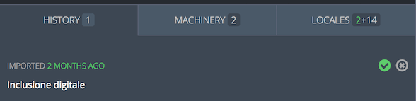

Understanding Pontoon user interface
Pontoon translation workspace
Pontoon’s translation workspace features the list of strings in the left sidebar and the editing space on the right.

Main toolbar
The main toolbar allows you to navigate to the dashboards or to change the selected resource.

Clicking the locale name will take you to the Team page for that locale. Clicking the project name will take you to the Project page for that project and the selected locale.
If you click on the resource (or All Resources), you will see a list of all resources available for that project. You can search for a resource, and click one to load only the entities of that resource. You can also click All Resources to go back to seeing all resources, or All Projects to load entities for all projects under the selected locale.
More information on how pages are organized in Pontoon is available in this document.
An overview of the status of the selected resource is located to the right of the main toolbar. Translators can view the overview in detail by clicking it once.
A project information icon is located to the right of the string overview. Translators can view information regarding the project, its priority level, and testing by clicking the icon.
The notifications icon, represented by a bell, is located on the right side of the main toolbar. Translators will be notified of any important updates regarding the current project. By clicking the bell icon, translators can view notifications in more detail or see all active notifications.
The profile menu is located at the far right of the main toolbar. Clicking the profile image will reveal the drop-down menu. From this menu, translators can perform several actions, like navigate to their profile page, download and upload translations, etc. For information about uploading and downloading translation check this document, for Machinery see here.

Note that some profile menu items are restricted by user rights.
Sidebar
The sidebar displays the list of strings in the current project resource. Each string is displayed with the string status (i.e. Missing, Translated, etc.) identified by a colored square, the source string, and the approved translation or the most recent suggestion if available.
Color legend:
- **green **: string is translated.
- **yellow **: string is fuzzy.
- **orange **: string has warnings.
- **red **: string has errors.
- **gray **: string is missing.
At the top of the sidebar, the translator can access Pontoon’s search and string filters.
Note that the sidebar toggles between the strings and the editing space when using the in-context editor.
Translation workspace
The translation workspace is where strings are translated.
A translator can navigate sequentially by clicking the PREVIOUS or NEXT buttons located at the top of the workspace or by using keyboard shortcuts (ALT + arrow down or up).
In the upper section of the workspace, the translator can view the source string, any comments regarding the string, and the resource path where the string is located.
The editing space is located in the lower section of the workspace. The translator can edit the translation or suggestion in the text editor.
To the lower-right side of the workspace, the translator can COPY the source string to the editor, CLEAR the area where translations are typed, and SUGGEST or SAVE the translation by clicking the corresponding button. This area is also used to display warnings and errors when submitting a translation.
To the lower-left side, a translator can access the workspace settings, keyboard shortcuts, and view the number of characters in the target and source string.
By clicking the gear icon, the translator can activate or deactivate Translation Toolkit Checks or Make Suggestions and navigate to their user settings.
Note that access to certain settings may be restricted by user rights.
By clicking the keyboard, a translator can view the workspace keyboard shortcuts.

Note that a project could be enabled in read-only mode for some locales: their translations will be available to other languages in the LOCALES tab, but it won’t be possible to change or submit translations directly in Pontoon.

Fluent - FTL files
When working on FTL (Fluent) files, the editing space will look a bit different:

In the example above, the string has a value and an attribute title. Both are displayed in the source section (highlighted in red), and available as separate input fields in the editing area (highlighted in orange).
The following image is an example of a string with plurals: while English only has 2 forms, plural and singular, other locales can have a different number of plural forms. In this case, Russian has 3 forms (highlighted in orange).

In the bottom left corner, the FTL button (highlighted in yellow) allows to switch between the standard UI (Simple FTL mode) and the Advanced FTL mode, where it’s possible to edit the original syntax directly, as you would in a text editor. For details on the Fluent syntax, see Fluent for localizers.
Note that the FTL button’s text is green when in Advanced FTL mode.
Pontoon workspace resources
Built-in translation resources are located below the editing space. The three integrated resources are HISTORY, MACHINERY, and LOCALES.

Learn how to use Pontoon’s translation resources in this document.
Pontoon in-context editor
Pontoon’s in-context editor displays the translatable strings as they appear on the web page, alongside the editing space. This means that translators can see where the source string appears and how the translation looks in real time. Pontoon’s in-context editor shows the strings in context on the right with the translation workbench on the left.

When using the in-context editor, the sidebar features both string navigation and the editing space. To view the editing space, double click on a string. To return to string navigation, click BACK TO LIST at the top-left of the sidebar.